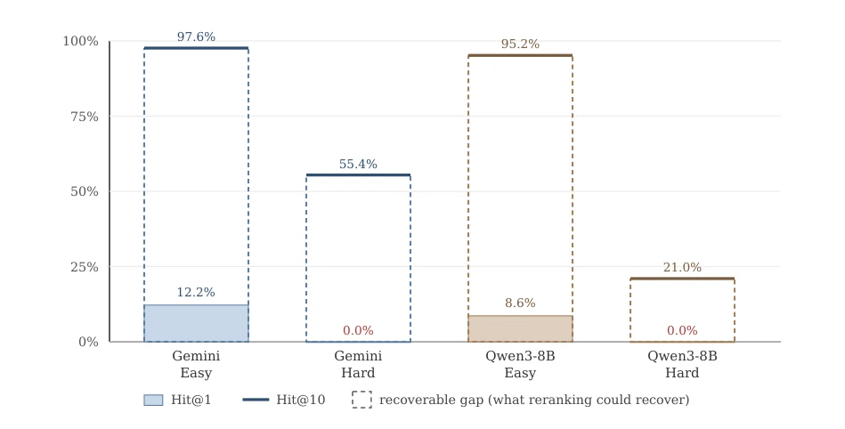
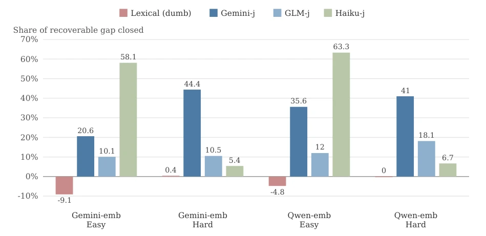
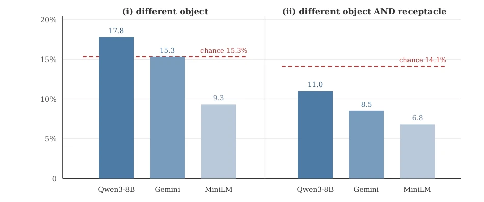

This paper pours cold water on "semantic retrieval", exposing the hypocrisy of current models in structural retrieval. Superficially retrieval, it is actually the survivorship bias of "keyword matching". In math competition problems, the model can retrieve the correct answer, but fails to rank first because look-alike distractors are too prominent; in embodied intelligence trajectories, simply changing an object name causes retrieval performance to plummet below random levels. Most ironically, while LLM reranking can save the situation, the effect depends entirely on the judge's whim; switching to a larger model judge could overturn results entirely, and memory contamination may exist. The authors did not claim to have solved the problem, but instead used "lexical reranking" as a diagnostic tool, discovering that the benchmark construction method determines whether it is "adversarial" or "accidental", an approach more effective than hyperparameter tuning. However, in downstream tasks, retrieval quality has almost no impact on the solver; this blame must be placed on truncation error, since the model can complete the answer and there is little context to optimize, reminding us not to blindly trust retrieval augmentation and that evaluation must be more rigorous.
研究动机Motivation
现有检索基准（如 MathNet [Alshammari et al., 2026] 和 ALFWorld 轨迹基准 [Kohar and Krishnan, 2025]）多奖励表面形式与意义一致的情况，忽略了结构对齐。当结构相同但措辞不同时，模型表现如何？现有工作缺乏跨域统一协议，且 MathNet 未测试重排序，ALFWorld 基准存在池覆盖偏差和 LLM 裁判一致性低的问题。我们需要验证嵌入检索是否真的理解结构，还是仅锚定字面 token。这关乎具身智能中任务泛化能力的评估真实性，若检索仅匹配关键词，则无法支持真正的程序性记忆检索。此外，现有研究未区分基准构建中的表面变异是人为对抗还是偶然，导致评估结论混淆，无法指导模型改进。
Existing retrieval benchmarks (such as MathNet [Alshammari et al., 2026] and ALFWorld trajectory benchmark [Kohar and Krishnan, 2025]) mostly reward cases where surface form and meaning are consistent, ignoring structural alignment. How do models perform when structure is the same but wording differs? Existing work lacks a cross-domain unified protocol, and MathNet did not test reranking, while the ALFWorld benchmark suffers from pool coverage bias and low LLM judge consistency. We need to verify whether embedding retrieval truly understands structure, or merely anchors on literal tokens. This concerns the authenticity of evaluating task generalization ability in embodied intelligence; if retrieval only matches keywords, it cannot support true procedural memory retrieval. Furthermore, existing research does not distinguish whether surface variation in benchmark construction is human-made adversarial or accidental, leading to confused evaluation conclusions that cannot guide model improvement.

Figure 1: The right answer is retrieved but not ranked first. Strict Hit@1 (bars) against Hit@10 (lines), 500 queries against the full 117,088-item corpus; the dashed span marks the recoverable gap available to any reranker.
Adopting a cross-domain shared protocol, covering mathematics (MathNet-Retrieve) and embodied trajectories (ALFWorld). Data flow: After query and corpus construction, first use production-grade Embedder (Gemini, Qwen, MiniLM) for cosine similarity retrieval, retaining Top-10. The innovation lies in introducing a "lexical control" reranker, calculating surface similarity via Jaccard and edit distance, serving as a cheap tool to diagnose whether benchmark construction is "adversarial" or "accidental". Subsequently use three independently trained LLM judges (Gemini, GLM, Haiku) for reranking, comparing Hit@k under strict and loose definitions. Metrics not only look at accuracy, but also calculate the closure ratio of "recoverable gap", and introduce paired downstream experiments to verify the actual utility of retrieval for the solver. All results quantify uncertainty through Bootstrap confidence intervals, ensuring statistical significance, and include strict integrity audits to exclude truncation interference.
Math domain 500 queries, embodied domain 118 queries. Baseline shows Math Hard layer Hit@1 is 0%, but Top-10 recall is high; embodied domain retrieval is below random level after excluding literal objects. Lexical reranking is harmful in math (adversarial), beneficial in trajectories (accidental). LLM reranking can recover the gap, but effect fluctuates wildly with judge and domain, existing memory contamination. In downstream experiments, Oracle retrieval and adversarial retrieval show no significant difference, zero-shot accuracy mainly controlled by truncation, retrieval has almost no optimization space. Ablation experiments confirm lexical signal is anti-information in math, positive information in trajectories. Furthermore, found that the same model across different deployments shows inconsistent performance when ranking margins are thin, and judge performance is significantly affected by query style, proving single judge unreliable.

Figure 2: Lexical reranking hurts while LLM reranking helps, mathematics domain. Share of the recoverable gap closed per configuration; all conditions rerank the same top-10 candidates.

Figure 3: Trajectory retrieval anchors on literal tokens. Strict Hit@1 for the three embedders against exact hypergeometric chance (dashed line), n=118, under gold definition (i), different object, and definition (ii), different object and receptacle. Under (ii) all three embedders fall below chance: sub-random, not indifferent.